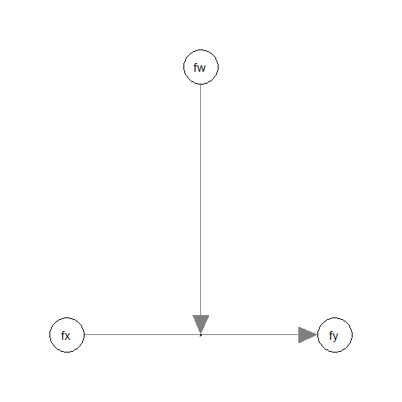
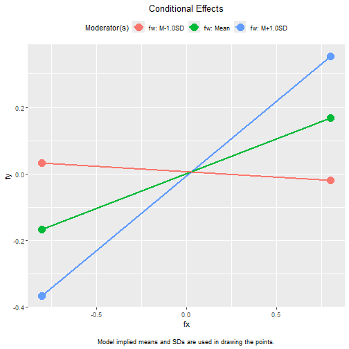
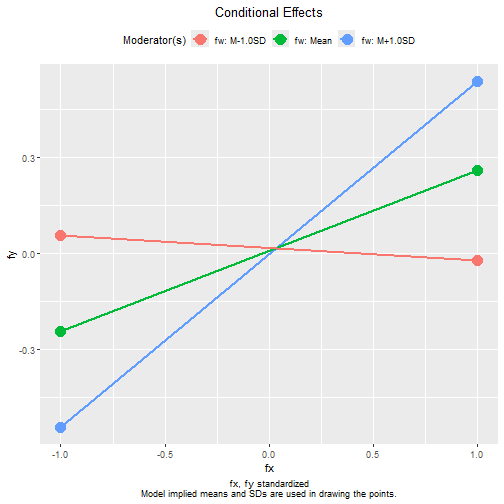

Latent Variable Moderation by SAM
Shu Fai Cheung & Sing-Hang Cheung
2026-06-01
Source:vignettes/articles/mo_sam.Rmd
mo_sam.Rmd(This document is for Version 0.3.4.25 or later, currently on GitHub only. The new version is scheduled to be available on CRAN in June 2026.)
Introduction
This article is a brief illustration of how to use
cond_indirect_effects() from the package manymome (Cheung & Cheung, 2024) to estimate the
conditional effects of a latent variable when its effect is moderated by
another latent variable, given the model parameters are estimated by the
SAM (structural-after-measurement) method by Rosseel et al. (2025).
Data Set and Model
This is the sample data set used for illustration:
library(manymome)
dat <- data_sem_mome
print(head(dat), digits = 3)
#> x1 x2 x3 x4 w1 w2 w3 w4 m1 m2
#> 1 0.594 0.3010 0.836 0.1931 2.354 0.185 0.851 1.145 0.636 0.528
#> 2 -0.656 -0.0448 0.687 0.0455 -1.838 -0.724 -0.157 -1.078 -1.198 -0.675
#> 3 0.302 -0.0953 0.347 -0.2332 0.744 -0.734 1.855 0.264 0.257 -0.159
#> 4 -2.022 -0.1876 -1.483 -0.6256 -0.519 0.202 0.727 0.382 -0.517 -1.221
#> 5 0.922 0.1873 0.381 -0.0365 -1.779 -0.992 -2.368 -1.089 -0.163 -0.982
#> 6 0.873 1.9889 0.956 1.2211 0.680 0.437 1.750 0.940 1.329 0.573
#> m3 m4 y1 y2 y3 y4
#> 1 0.280 0.3634 -0.239 0.924 0.168 0.8163
#> 2 -1.124 0.0211 0.408 -1.062 -0.281 -0.0422
#> 3 -0.294 -0.6764 -0.138 0.914 0.177 0.7359
#> 4 -0.340 0.4333 -0.552 0.334 -0.172 0.1154
#> 5 -0.978 -0.0132 -1.268 -1.430 -0.696 -1.5051
#> 6 1.591 0.4417 -0.284 -0.124 -0.351 0.7251This dataset has indicators of the following four latent variables:
one predictor (fx), one mediators (fm), one
outcome variable (fy), and one moderator
(fw).
Only the latent variables fx, fx, and
fy will be used in this illustration.
Suppose this is the model being fitted:

The path from fx to fy is moderated by
fw, the moderator.
If this model is fitted to the scale scores, then a product term
fx:fw is used to model the moderation.
If the model is for the latent variables, the new approach, SAM
(structural-after-measurement), presented in Rosseel et al. (2025) can be used, using the
function sam() from lavaan. This is the model
syntax:
mod <- "
# Measurement model:
fx =~ x1 + x2 + x3 + x4
fw =~ w1 + w2 + w3 + w4
fy =~ y1 + y2 + y3 + y4
# Structural model:
fy ~ fx + fw + fx:fw
"The moderation effect is modelled by fx:fw. To fit this
model by SAM, use sam() from lavaan. As
recommended by Rosseel et al. (2025),
nonparametric bootstrapping will be used to compute the standard errors
and form the confidence intervals.
fit <- sam(
model = mod,
data = data_sem_mome,
se = "bootstrap",
bootstrap.args = list(
R = 2000
),
iseed = 2345,
parallel = "snow",
ncpus = 20
)For details on the SAM approach, consult Rosseel et al. (2025) and Rosseel & Loh (2024).
This is a summary of the results:
summary(fit,
ci = TRUE)
#> This is lavaan 0.6-21 -- using the SAM approach to SEM
#>
#> SAM method LOCAL
#> Mapping matrix M method ML
#> Number of measurement blocks 3
#> Estimator measurement part ML
#> Estimator structural part ML
#>
#> Number of observations 500
#>
#> Summary Information Measurement + Structural:
#>
#> Block Latent Nind Chisq Df
#> 1 fw 4 3.416 2
#> 2 fx 4 1.782 2
#> 3 fy 4 2.332 2
#>
#> Model-based reliability latent variables:
#>
#> fx fw fy
#> 0.887 0.881 0.831
#>
#> Summary Information Structural part:
#>
#> chisq df cfi rmsea srmr
#> 0 0 1 0 0
#>
#> Parameter Estimates:
#>
#> Standard errors Bootstrap
#> Number of requested bootstrap draws 2000
#> Number of successful bootstrap draws 2000
#>
#> Regressions:
#> Estimate Std.Err z-value P(>|z|) ci.lower ci.upper
#> fy ~
#> fx 0.208 0.045 4.622 0.000 0.120 0.296
#> fw -0.008 0.042 -0.183 0.855 -0.090 0.074
#> fx:fw 0.288 0.058 5.000 0.000 0.184 0.413
#>
#> Covariances:
#> Estimate Std.Err z-value P(>|z|) ci.lower ci.upper
#> fx ~~
#> fw -0.016 0.033 -0.486 0.627 -0.083 0.047
#> fx:fw -0.005 0.049 -0.109 0.913 -0.100 0.091
#> fw ~~
#> fx:fw 0.036 0.045 0.814 0.415 -0.055 0.121
#>
#> Intercepts:
#> Estimate Std.Err z-value P(>|z|) ci.lower ci.upper
#> fx:fw -0.016 0.033 -0.486 0.627 -0.083 0.047
#>
#> Variances:
#> Estimate Std.Err z-value P(>|z|) ci.lower ci.upper
#> fx 0.643 0.064 9.989 0.000 0.520 0.772
#> fw 0.695 0.065 10.667 0.000 0.564 0.826
#> .fy 0.381 0.039 9.741 0.000 0.302 0.458
#> fx:fw 0.436 0.089 4.913 0.000 0.288 0.624Generating Bootstrap Estimates (Optional)
Although bootstrapping has already been conducted when calling
sam(), it is recommended to call do_boot() to
compute additional statistics, such as implied variances and
covariances, to be used in other functions in manymome.
Otherwise, this step needs to be repeated every time those functions are
called.
boot_out <- do_boot(fit)Because bootstrap estimates have already been stored, only the output
of sam() is sufficient.
Conditional Effects
We can now use cond_effects() to estimate the effect of
fx on fy for different levels of the moderator
(fw) and form their bootstrap confidence intervals.
Information stored by do_boot() can be reused. There is no
need to repeat the resampling.
Suppose we want to estimate the conditional effects from
fx to fy, conditional on fw:
(Refer to vignette("manymome") and the help page of
cond_effects() on the arguments.)
out_xy_on_w <- cond_effects(
wlevels = "fw",
x = "fx",
y = "fy",
fit = fit,
boot_ci = TRUE,
boot_out = boot_out
)
out_xy_on_w
#>
#> == Conditional effects ==
#>
#> Path: fx -> fy
#> Conditional on moderator(s): fw
#> Moderator(s) represented by: fw
#>
#> [fw] (fw) ind CI.lo CI.hi Sig
#> 1 M+1.0SD 0.834 0.448 0.322 0.593 Sig
#> 2 Mean 0.000 0.208 0.120 0.296 Sig
#> 3 M-1.0SD -0.834 -0.032 -0.154 0.092
#>
#> - [CI.lo to CI.hi] are 95.0% percentile confidence intervals by
#> nonparametric bootstrapping with 2000 samples.
#> - The 'ind' column shows the conditional effects.
#> When fw is one standard deviation below mean, the
indirect effect is -0.032, with 95% confidence interval [-0.154,
0.092].
When fw is one standard deviation above mean, the
indirect effect is 0.448, with 95% confidence interval [0.322,
0.593].
Standardized Conditional Indirect effects
The standardized conditional indirect effect from fx to
fy conditional on fw can be estimated by
setting standardized_x and standardized_y to
TRUE:
std_xy_on_w <- cond_effects(
wlevels = "fw",
x = "fx",
y = "fy",
fit = fit,
boot_ci = TRUE,
boot_out = boot_out,
standardized_x = TRUE,
standardized_y = TRUE
)
std_xy_on_w
#>
#> == Conditional effects ==
#>
#> Path: fx -> fy
#> Conditional on moderator(s): fw
#> Moderator(s) represented by: fw
#>
#> [fw] (fw) std CI.lo CI.hi Sig ind
#> 1 M+1.0SD 0.834 0.539 0.405 0.696 Sig 0.448
#> 2 Mean 0.000 0.250 0.147 0.345 Sig 0.208
#> 3 M-1.0SD -0.834 -0.038 -0.187 0.112 -0.032
#>
#> - [CI.lo to CI.hi] are 95.0% percentile confidence intervals by
#> nonparametric bootstrapping with 2000 samples.
#> - std: The standardized conditional effects.
#> - ind: The unstandardized conditional effects.
#> When fw is one standard deviation below mean, the
standardized indirect effect is -0.038, with 95% confidence interval
[-0.187, 0.112].
When fw is one standard deviation above mean, the
indirect effect is 0.539, with 95% confidence interval [0.405,
0.696].
Plotting the Conditional Effects
The plot() method can be used on the output of
cond_effects().
This is the plot of the conditional effects:
plot(out_xy_on_w)
This is the plot of the standardized conditional effects:
plot(std_xy_on_w)
The two plots are expected to be identical except for the values on the axes. It is because they differ merely only the units of the variables, one standardized and one unstandardized.
Please the help
page of the plot() method for the output of
cond_effects() on how to customize the plot.